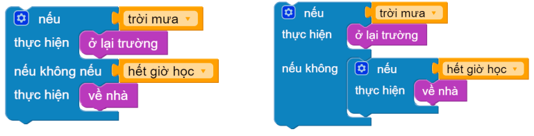

7. Bài 3: Xử lý thông tin
Mục tiêu
Hiểu về khái niệm biến và cách sử dụng biến trong chương trình. Hiểu về cảm biến gia tốc được tích hợp trên xBot, ứng dụng làm rrobot tự tránh khỏi các trường hợp nguy hiểm.
7.1 Giới thiệu về cảm biến gia tốc
Cảm biến gia tốc trên xBot
Mạch điều khiển trên xBot được tích hợp sẵn MPU-6050 - Một cảm biến gia tốc (ac-celerometer).
Cảm biến này đo được góc nghiêng của xBot và cho ta biết xBot đang nghiêng về hướng nào.
{kind=link}
Cảm biến đo được độ nghiêng theo 3 trục tọa độ không gian: - x (nghiêng về sau hay tới phía trước)
y (nghiêng qua trái hoặc phải)
z (xBot nằm úp hoặc ngửa)
{kind=link}
Khối lệnh làm việc với cảm biến gia tốc
Khối lệnh đọc giá trị các trục x, y, z của cảm biến gia tốc. Các giá trị này sẽ cho ta biết xBot đang nghiêng về hướng nào.
{kind=link}
7.2 Giới thiệu về cửa sổ thông tin
Cửa sổ thông tin là thành phần giúp chúng ta biết được các thông tin gửi đến từ robot, giúp cho việc viết chương trình dễ dàng hơn.
Để gửi thông tin cho robot và hiển thị lên cửa sổ thông tin này, bạn cần dùng khối lệnh sau:
{kind=link}
Để hiển thị cửa sổ thông tin, bạn hãy nhấn vào nút Chức năng nâng cao, chọn Hiện cửa sổ thông tin để mở cửa sổ hiển thị thông tin (hình minh họa).
{kind=link}
Bạn hãy thử viết chương trình in độ nghiêng 3 trục x,y,z của robot.
{kind=link}
Sau khi chạy chương trình, bạn hãy thử cầm robot xBot và nghiêng về trước hoặc sau, để xem giá trị các trục thay đổi như thế nào.
Bạn có thể thử in ra giá trị các trục còn lại là y và z.
{kind=link}
7.3 Giới thiệu về biến
Biến là gì?
Chúng ta có thể hiểu, biến như một chiếc hộp, nơi ta có thể chứa thông tin mà ta cần đến để sử dụng nó sau này, và mỗi hộp chỉ có thể chứa duy nhất một giá trị (chữ, số, chuỗi, dữ liệu) tại một thời điểm.
{kind=link}
- Ví dụ:
Nếu bạn đặt số 1 vào trong hộp, lúc này hộp sẽ mang giá trị là 1.
Sau đó, bạn đặt số 3 vào trong hộp, lúc này hộp sẽ mang giá trị là 3, giá trị 1 lúc trước sẽ không còn.
Cách tạo biến
Nhấn vào Tạo biến… trong danh mục Biến
Nhập tên biến (Ví dụ: “trục x” - Biến dùng để lưu giá trị trục x của cảm biến trên xBot)
{kind=link}
{kind=link}
Khối lệnh Cho trục x bằng có chức năng lưu giá trị vào biến. Bạn hãy thử viết một chương trình gồm 2 phần:
Lưu giá trị trục x đọc được từ robot vào biến “trục x”
In ra cửa sổ thông tin
Chương trình mẫu:
{kind=link}
7.4 Làm việc với biến
Chúng ta có nhiều nhóm khối lệnh để làm việc với biến. Dưới đây là một số nhóm chính:
7.4.1 Các phép toán cơ bản
Phép toán cơ bản gồm 4 loại: cộng (+), trừ (-), nhân (x), chia (÷).
Các phép tính này sẽ được hỗ trợ bằng khối lệnh dưới, trong mục Tính Toán.
{kind=link}
Ngoài ra, khối lệnh trên còn hỗ trợ phép toán lũy thừa (^). Bạn sẽ làm quen với phép toán này khi học lớp 6.
Đếm số lần nhấn nút
Chúng ta thử viết chương trình đếm số lần nhấn nút. Chương trình sử dụng một biến tên là Đếm để lưu số lần nhấn nút. Mỗi khi nút được nhấn, giá trị của biến này sẽ tăng thêm 1 và in ra cửa sổ thông tin.
Bước 1: Bạn tạo biến tên là Đếm và cho biến này có giá trị ban đầu là 0 (khối lệnh giá trị 0 nằm trong mục Tính toán).
{kind=link}
Bước 2: Trong vòng lặp mãi mãi, chương trình sẽ dừng và chờ cho nút được nhấn.
{kind=link}
Bước 3: Sau khi nút được nhấn thì cộng thêm 1 vào biến Đếm (sử dụng phép cộng và khối lệnh Cho đếm bằng)
{kind=link}
Bước 4: Từ mục Biến, kéo khối lệnh biến Đếm vào một bên của phép tính cộng.
{kind=link}
Bước 5: In ra cửa sổ thông tin và chờ 0,2 giây (thời gian thả nút - tránh bị đếm trùng trong 1 lần nhấn nút). Toàn bộ chương trình sẽ như sau:
{kind=link}
7.4.2 Các phép so sánh
Chúng ta có thể dùng biến trong các phép so sánh. Các phép so sánh này sẽ trả về Đúng hoặc Sai. Bạn có thể sử dụng kết quả này trong các câu điều kiện khi lập trình.
{kind=link}
Câu lệnh điều kiện
Câu lệnh điều kiện được dùng khi muốn kiểm tra một điều kiện nào đó, tùy vào kết quả mà chương trình sẽ có các bước xử lý khác nhau. Điều kiện sử dụng phải có giá trị là đúng hoặc sai.
{kind=link}
Bật đèn LED trái/phải khi robot nghiêng một bên
Chúng ta sẽ viết một chương trình: Khi robot nghiêng sang bên nào, đèn LED bên đó sẽ bật.
Sau đây là cách thực hiện:
Ở phần Nếu, bạn có thể dùng khối lệnh so sánh và biến trục y để làm điều kiện.
Kéo khối lệnh so sánh vào
{kind=link}
Kéo biến và giá trị so sánh vào
{kind=link}
Thay đổi phép so sánh, đồng thời, thêm khối lệnh tương ứng với mỗi trường hợp đúng và sai của điều kiện
{kind=link}
Khai báo giá trị cho biến trục y, đặt chương trình vào vòng lặp và gán vào trục y giá trị cảm biến gia tốc
{kind=link}
Nhận xét chương trình
Vấn đề xảy ra: Vấn đề xảy ra: Ngay cả khi để trên mặt bàn, cảm biến vẫn đọc được là nghiêng về một bên.
Lí do: Mặt bàn không thể cân bằng tuyệt đối.
Giải quyết: Cải tiến chương trình như sau - khi độ nghiêng quá nhỏ (trục y có giá trị trong khoảng từ -10 đến 10) thì sẽ tắt cả 2 đèn LED.
Sơ đồ xử lý của chương trình
{kind=link}
Theo như sơ đồ, chúng ta sẽ cần 3 nhánh cho 3 điều kiện. Ở chương trình cũ chỉ có 2 điều kiện, bạn thêm một điều kiện như sau:
{kind=link}
Nhấn vào Cài đặt (biểu tượng bánh răng), kéo khối nếu không nếu vào giữa 2 khối lệnh nếu và nếu không.
Sau đó, bạn sử dụng các khối lệnh cho từng điều kiện theo như sơ đồ xử lý thì sẽ được chương trình:
{kind=link}
Nhánh điều kiện Nếu không nếu
Điều kiện “nếu không nếu” là một điều kiện gộp giữa “nếu không” và “nếu”
{kind=link}
Ví dụ: Nếu trời mưa bạn A sẽ ở lại trường, nếu không bạn A sẽ về nhà nếu hết giờ học
{kind=link}
7.5 Bài tập mở rộng
Bài 1
Hãy thực hiện: Bật đèn trái phải ngẫu nhiên sau mỗi 1 giây.
Gợi ý: dùng khối lệnh chọn 1 số bất kỳ trong mục Tính Toán

Ví dụ: Dùng khối lệnh “chọn 1 số bất kỳ” từ 1 đến 2. Nếu kết quả trả về là 1 thì bật đèn, nếu là 2 thì tắt đèn.
Bài 2
Hãy thực hiện: Đếm số lần nhấn nút, bật đèn khi số lần nhấn nút là chẵn và tắt đèn khi số lần nhấn nút là số lẻ.
Gợi ý: dùng khối lệnh “… là số chẵn/lẻ” trong mục Tính Toán.
Bài 3
Làm robot thông minh, phát hiện được nguy hiểm: Nếu thấy bị nghiêng về sau thì sẽ chạy tới cho đến khi hết nghiêng và ngược lại, nếu thấy bị nghiêng về trước thì sẽ chạy lùi lại.
Gợi ý: dùng giá trị trục x của cảm biến gia tốc trong mục Đầu Vào.
7.6 Câu hỏi ôn tập
Cảm biến gia tốc có chức năng gì? Chỉ ra khối lệnh làm việc với cảm biến gia tốc trên OhStem App.
Biến là gì? Liệt kê ra các phép toán khi làm việc với biến trên OhStem App.
Ứng dụng của biến trong lập trình là gì? Nêu một số ví dụ.